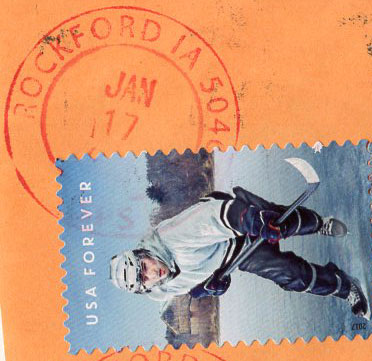
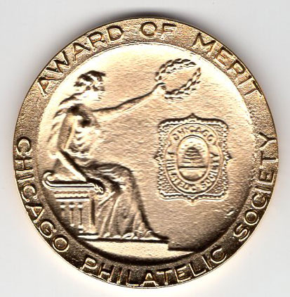
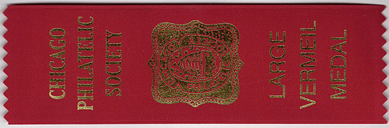

My Participation in the Chicagopex 2019 Websites Competition
November 22 - 24, 2019
Victor Manta, PWO
I participated in websites competitions since the first one, in 1999, organized by the FIP. Because all those competitions had all kind of problems, I continued to participate and to describe their positive and negative aspects for the members of the PWO and for other interested stamp collectors.
It is not the awards that interests me but how deep were the websites analyzed by the jurors and which improvements they proposed to the authors. Taking into consideration that there are no jurors qualified to judge philatelic websites, this activity should be of interest for the exhibitors as well as the jurors themselves.
The following arguments convinced me to participate in Chicagopex 2019:
- Websites participation accepted
- Entry fee: $25 (it is on the rather low side)
- PayPal option for paying from abroad
- No requirement for membership to any official philatelic organization
- No intermediary national commissioners
- No requirement for previous exhibition points
- The jury's Critiques, which are essential to judge not only the quality/performance of the own websites but also of the juries! Note: None of the websites competitions since 2002 sent such critiques and for this reason this competition deserves the full attention and well thought out comments.
The closing date for applications was September 14, 2019. Source 1 , Source 2 . I sent by email and by post my application on June 26, 2019, with all documents that were required (a check paying the fee being included), and I asked two times for a confirmation of reception by email. None ever came I heard nothing from the organizers, even though the event was approaching
On Nov. 25, 2019, surprise, surprise, I received the following email from the Literature Exhibition Chairman Ken Trettin, yes, the one who didn't answer one of my email:
Attached is a copy of the Palmaries for the 2019 Chicagopex Literature Exhibition. During the next several days I will be packaging your ribbons, medals and Literature Evaluation sheets.
The following email from Mr. Ken Trettin followed on Nov. 30, 2019:
I have discovered that I am out of mailers. When I get a new supply I will mail your medal, ribbon and Literature Exhibit Evaluation Form. So that you can read the jury's comments about your entry I am attaching a PDF of their comments.
As of writing of this article (Dec. 20) I received nothing, even if Mr. Trettin and I live in the same country! But the most precious for me is, of course, the Evaluation Form filled in by the Jury. You can access it, as a PDF file, by clicking here. It will open in a new window.
Because it is handwritten, it was quite difficult for me to read it. It is a first sign of the limited computer proficiency of Mr. Pat Walters, the Chief Literature judge, this because programs to write into PDF files are easy to find for free on the web. We shouldn't forget that I speak about a chief judge who is supposed to judge philatelic websites, as well as about his colleagues, Mr. Alan Warren and Mr. James Graue, all of them being by reputation very competent judges for standard literature exhibits.
And now let's dive into my Literature Exhibit Evaluation Form.
A. Treatment of content (How well you said it). 40 possible
- Interesting introduction (Reasons, goals, etc.). That is what the judges learned when reading the PWO site. They totally ignored fundamental subjects of this site, that makes it rather unique. Any attentive/objective visitor will easily notice these aspects and for this reason I will not discuss them.
- Immediately after the above stamen follows : However pages are out of date 2002 2004, same for other collaborative pages. This site was published in 2001, and pages were published continually since then. I don't understand this reproach addressed to pages that were written in the past and that reflect circumstances that existed then.
- Pages like Title appear dull in appearance need to refresh/update (ie.? text mainly). Even if English is not my mother tongue, it looks to me that this language is not the most appropriate, especially for a judge for literature, be it philatelic or not. Probably here the judge means the Front page of the site, whose humor escapes the judgement of the judge (to use his own style).
- Could add to information forum. Full mystery about what could this mean but we will eventually understand more later from judge's comments.
Result so far: 8 points of 40 (20%) lost. How to do better in the future is still unclear.
B. Originality, significance and research. (What you had to say). 40 possible.
One bad link REC collecting stamps no link out of date. Again, a problem of computer (i)literacy of the jurors. Let us consider my original text: For many of PW the newsgroup news:rec.collecting.stamps.discuss was the only place where they could discuss their problems, or where they could announce their new pages. One needs a newsgroup reader to read the messages on different newsgroups and this should be supplied to the OS by the user. Therefore it is not a bad link.
Some references have links no longer available. You need to maintain / check all of these. Mr. Walters means that some links are obsolete, which is true, but for this reason I publish at the bottom of each page when was it updated. It is a fact of life that the links change permanently, and it is a lot of work to maintain their functionality, what everybody knows.
Could't find some articles mentioned in the synopsis. I wonder which ones
Not a word that refers to the real goal of this chapter of the Form, I cite. Overall subject significance: Scope, degree of difficulty and philatelic interests. ( ) Discoveries, research, analysis or approaches to a comprehensive subject understanding. There were so many things to say but they were totally ignored.
Here I lost 5 points (12.5%) for something that the Germans' name for such teachers is Pünktli Schiesser (hunters of missing dots on "i").
C. Technical Matters. (How easy is it to use). 15 Possible.
It is about: Digital: Easy of loading, navigability, compatibility, clarity of images, links, contents page, index.
What the jurors write: Title page and links need rework. Here is the right place to consider the links but by mentioning them in several places the site is downgraded several times for the same sin. Title page is probably the Front (entry) page, the whole being a matter of different tastes, and where the analysis repeat itself.
Some sites probably need to be revisited (take off sites and place in new locations. Difficult to understand the meaning of this. Probably the word sites should mean pages. The reason why should some pages be placed differently is not obvious to me and it is not at all explained.
My site lost 3 points here (20%).
D. Production (How well it is made). 5 Possible.
No comments/indications presented, but nevertheless 2 points of five were subtracted. Why, honorable jurors? Three points more and my exhibit would be worth Gold instead of Large Vermeil! Not that I really care about it, but the question remains
E. Other Comments (use reverse as necessary)
Add new tips and comments for benefit of all members or potential new members where suggestion / tips can be discussed.
The idea of a discussion forum was discussed about 18 years ago and it was rejected by the PWO members. In my experience such forums are the first idea that comes to unexperienced users and the first one that is not supported by sufficient activity. There are many forums on the philatelic web for discussing everything pertaining to stamp collecting and related activities.
Note. I didn't receive the scan of the mentioned reverse side of the evaluation form.
MY CLOSING COMMENTS AND CONCLUSONS
- It was worth to participate in this very limited website competition (with only 4 participants), especially since I received this time the feedback (Critiques) from the jury.
- As I wrote above, the Critiques has shown the limited knowledge in websites matters of the three distinguished jurors for literature. Being a philatelic literature juror doesn't imply per se an automatic knowledge about websites creation and maintaining, the only valid mean being to create philatelic websites and to participate in competitions.
- Looking just for the simplest things, like the validity of links, is not the best way to evaluate the philatelic websites. Because the jurors insisted on functioning links, none of the four awarded websites at Chicagopex 2019 has received a published link on the page 2019 Literature Palmares and two of them, mine included, don't even have a description.
One can only wonder what says to visitors of the Palmares document this description: www.pwmo.org? Nothing at all! Of course, it is easy to keep such non-links up to date. Nevertheless, I published here a link to the 2019 Literature Palmares page.
Just to finally mention that the link pages of the CCC website have many broken links and that nobody suffered because of them
- Before asking to be paid, even if symbolically, the jurors should go through a long practical experience as philatelic webmasters, that will help them to look at websites with due attention and respect.
- Despite the shortcomings, the websites competitions should continue and should help to improve the knowledge of all their participants.
UPDATE 2020
Finally, on Jan. 27, 2020 I received the long awaited (2 months) medal and pennon. They were sent on Jan 17, as witnessed by the postal cancel. The medal and the pennant are not related to an specific exhibition or to the name of the exhibitor. I received also the already presented Evaluation Form but not an accompanying letter too, as expected ...



| Created:
Dec. 19, 2019 . Revised:
Jan. 28, 2020. Copyright © 2019 - 2020 by PWO and by Victor Manta, Switzerland/USA All rights reserved worldwide. |
|